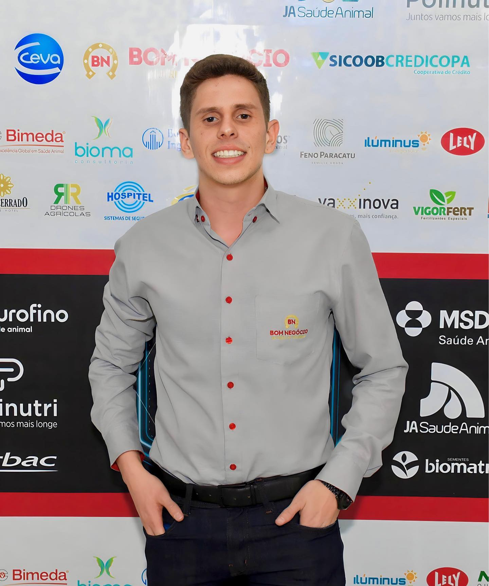
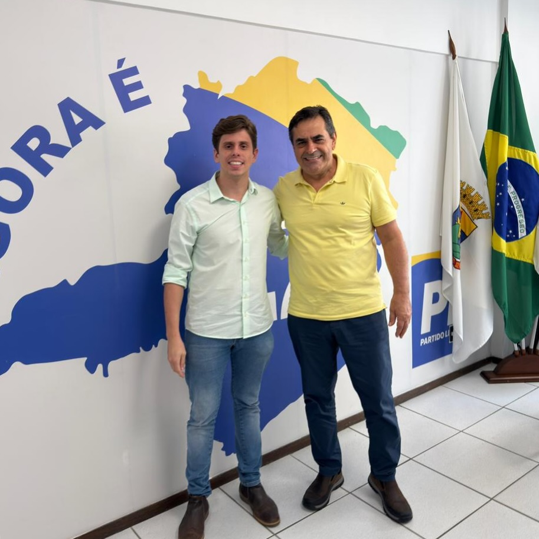

OUVIR
Entender cada região antes de propor qualquer caminho.
Administrador, empresário e produtor rural. Uma nova geração preparada para ouvir, decidir e fazer Minas avançar.
Minas não precisa de promessa distante. Precisa de presença, planejamento e decisões que façam diferença na vida real.
Pedro representa uma política próxima das pessoas, conectada à produção, aos municípios e a quem movimenta o estado todos os dias.
Entender cada região antes de propor qualquer caminho.
Transformar demandas locais em prioridades bem construídas.
Acompanhar cada compromisso com clareza e prestação de contas.
Uma primeira construção de compromissos para orientar o projeto. Selecione um tema e conheça as diretrizes.
Fortalecer quem empreende, produz e gera oportunidades, com atenção especial às vocações de cada região.
Priorizar a recuperação de trechos estratégicos para segurança, escoamento da produção e desenvolvimento local.
Defender processos mais simples, metas transparentes e acompanhamento público dos compromissos assumidos.
Ampliar a articulação entre saúde, educação e assistência para apoiar pessoas com deficiência e suas famílias.
Aproximar o mandato das prefeituras e entidades locais para tirar projetos prioritários do papel.
Conectar formação técnica, empreendedorismo e primeiro emprego às oportunidades existentes em Minas.
Uma plataforma construída de perto, respeitando as diferenças e as forças de cada parte do nosso estado.
Produção rural, infraestrutura, saúde regional e oportunidades para quem quer permanecer e crescer perto de casa.

Pedro Bom Negócio é administrador, empresário e produtor rural. Conhece a realidade de quem trabalha, gera emprego e precisa de um poder público mais eficiente.
Uma história construída perto das pessoas e conectada aos valores de Minas.
Experiência prática para analisar problemas, organizar prioridades e buscar resultado.
Vivência na produção rural e respeito por quem movimenta a economia mineira.
POLÍTICA BOA É AQUELA QUE ESCUTA ANTES E PRESTA CONTAS DEPOIS.
Um espaço direto para Pedro falar da sua trajetória, dos motivos da candidatura e do compromisso com Minas.
Os próximos compromissos, cidades e horários serão publicados aqui pela equipe.
ACOMPANHAR NO INSTAGRAMRegistros oficiais e momentos de trajetória para aproximar Pedro de quem quer conhecer melhor o projeto.
